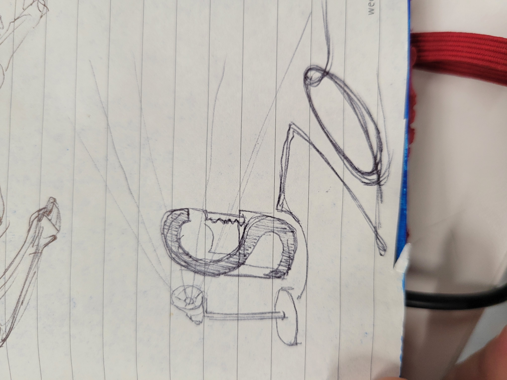
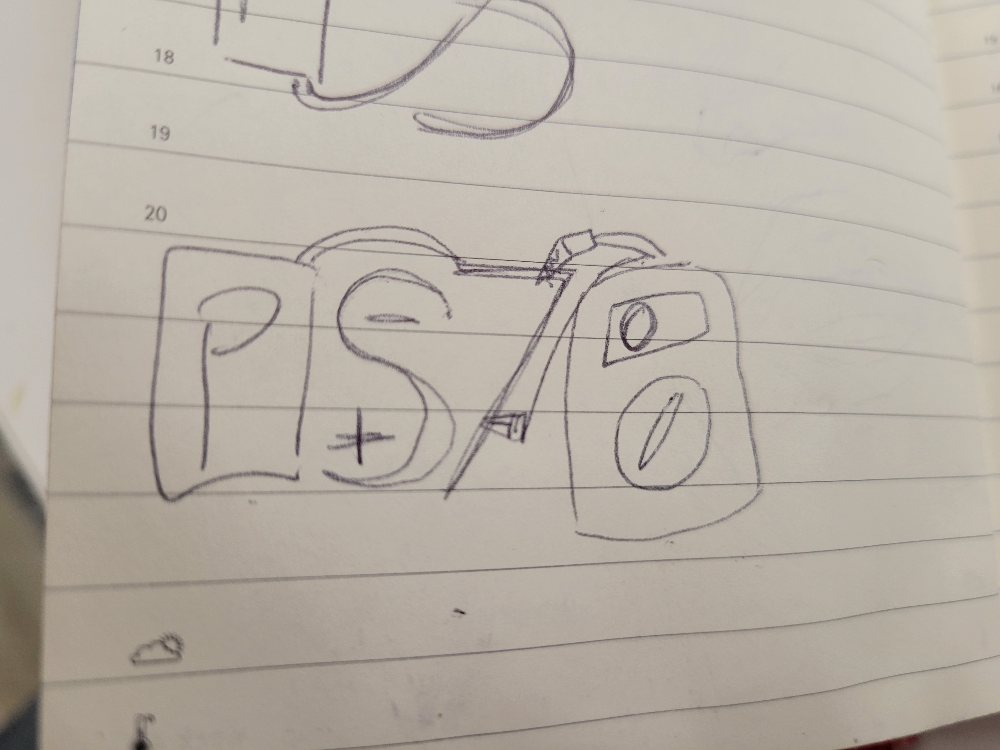

<br>
#### Week 1: Introduction
Here is an image:


Final Project
I'd like to use this class as an opertunity to make some accesability devices for a friend of mine who sufferes from a pretty complex and debilitating nerve/join/inflamation issue. There are a couple tasks that are hard for her which I think it will be possible to build devices to make easier...
1. She struggles to bear any weight in her hands/wrists/fingers, so some sort of whearable tray would be really useful. She'd need to be able to push the things onto the tray, and it would need to be very ergonomic.
2. Pouring juice/water/anything in a bottle ;) is really difficult/impossible for her (depending on the day). It would be really good for her to be able to do that. There are a few ways I could go about this, in verying degrees of complexity.
3. This one would likly be the most complex, but also the most useful. Some days lifting a spoon to her mouth is impossible. Which obviously makes it very difficult for her to feed herself. Some sort of system to bypass this problem would be amazing.
And here is a [link](../index.html).